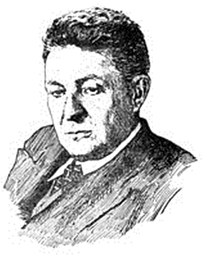

А. А. Слуцкин

Абрам Александрович Слуцкин (5(17) июля 1891 - 13 июля 1950), - советский радиофизик, доктор физико-математических наук, профессор Харьковского университета, дейcтвительный член АН УССР (с 1948). Член ВКП(б) с 1940 года.
По окончании в 1916 физико-математического факультета Харьковского университета свыше 30 лет работал там же (с 1928 - профессор); одновременно - в Харьковском физико-техническом институте (УФТИ) АН УССР (с 1929 года - руководитель отдела).
В 1919 году при кафедре физики естественного отделения университета под руководством одного из основоположников радиофизики, впоследствии член-корреспондента АН СССР, профессора Д. А. Рожанского, работал семинар, занимавшийся электромагнитными колебаниями. В 1933 году ученик Д. А. Рожанского А. А. Слуцкин, уже защитивший к тому времени докторскую диссертацию и заведующий отделом УФТИ АН УССР, возглавил кафедру электромагнитных колебаний, которая занималась проблемами генерации, распространения и приема радиоволн высоких частот. В 1939 году кафедра была переименована в кафедру технической физики, и в послевоенные годы занималась развитием СВЧ техники и радиофизических методов исследования вещества.
В 1924 он совместно с Д. С. Штеинбергом сделал первое сообщение о предложенном им магнетронном способе получения электромагнитных колебаний с наиболее короткой в то время длиной волны, до 7 см, а затем (в 1935) разработал конструкцию и теорию двуханодного магнетрона. Совместно с сотрудниками им были получены мощные ионные пучки с помощью магнетронов.
Результаты исследований А. А. Слуцкина позволили в 1938-1939 г. построить в УФТИ действующий макет импульсного трехкоординатного радиолокатора в диапазоне дециметровых волн, в которойрой генератором был двуханодный магнетрон.
Под руководством А. А. Слуцкина в послевоенные годы были разработаны многорезонаторные магнетроны сантиметрового и миллиметрового диапазонов, изучалось распространение и поглощение СВЧ в различных средах.
С работами А.А. Слуцкина было связано создание первых отечественных медицинских установок УВЧ для лечения различных патологических процессов. Толчком к медицинским работам послужила необходимость выяснения возможных отрицательных эффектов воздействия на человеческий организм мощных ВЧ и УВЧ излучений промышленных и экспериментальных установок.
А. А. Слуцкиным опубликовано свыше 50 научных трудов и подготовлено много молодых специалистов.
Публикации
- Слуцкин, А. А. Получение колебаний в катодных лампах при помощи магнитного поля. / А. А. Слуцкин, Д. С. Штейнберг // Журнал Русского физикохимического Общества. Сер. физическая. 1926. - Т. 58, вып. 2. - С. 395 -407.
- Теория магнетронного генератора с разрезанным анодом, // Журнал технической физики, 1935, т. 5, вып. 4;
- Применение магнитного поля для образования ионно-электронных пучков, // Журнал технической физики, 1935, т. 5, вып. 8,
- К вопросу об умножении частоты с помощью магнетронов, // Журнал технической физики, 1936, т. 6, вып. 10;
- Температура электронов в магнитном поле, // Журнал технической физики, 1937, т. 7, вып 18-19;
- Механизм возбуждения колебаний в многосегментных магнетронах, // Журнал технической физики, 1947, т. 17, вып. 4;
- Получение колебаний большой мощности дециметрового диапазона в непрерывном режиме при помощи магнетронов. // Радиотехника. 1949, т. 1, № 9 (совм. с др.).
Источник
- Лобанов, М.М. Начало советской радиолокации. - "Советское радио", 1975.
- Биографический энциклопедический словарь.- Директ-Медиа, 2009.